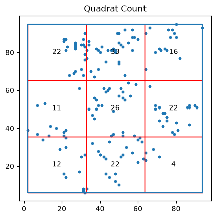
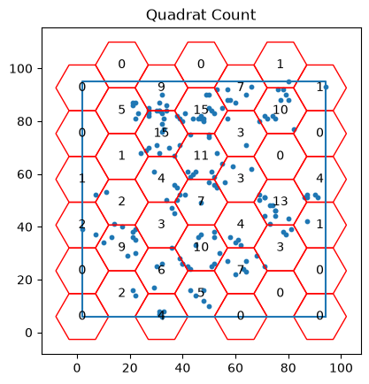
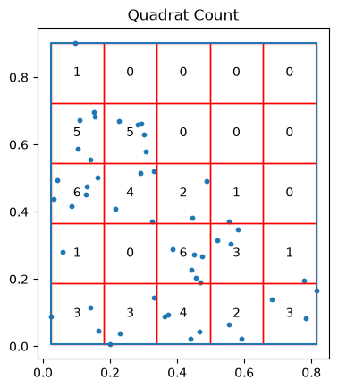
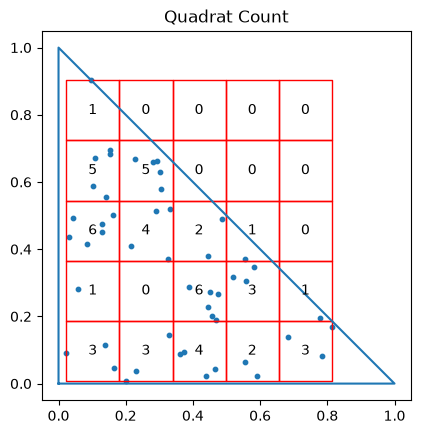

Quadrat-based statistics in pointpats¶
This notebook demonstrates quadrat-based methods for analyzing planar point
patterns using the current pointpats.quadrat_statistics implementation.
The workflow is:
Represent the point pattern as a NumPy array of coordinates with shape
(n, 2).Construct a rectangular or hexagonal quadrat tessellation over the minimum bounding box (MBB) of the points.
Compute a Pearson chi-square statistic from per-quadrat counts.
Optionally, obtain a Monte Carlo p-value by simulating CSR realizations within the same study window, with reproducibility controlled by
rng.
Key implementation facts (relevant for interpretation):
The default chi-square statistic uses equal expected counts across included cells.
A
windowmay be supplied; if omitted, the MBB rectangle is used.Monte Carlo inference makes the reference distribution window-aware, but it does not change how expected counts are defined.
1. Quadrat statistics and CSR¶
Quadrat analysis partitions space into a set of non-overlapping cells and compares the observed counts per cell to what is expected under complete spatial randomness (CSR).
Let \(O_i\) be the count in cell (i), and let (k) be the number of cells included in the analysis. The implemented test statistic is the Pearson chi-square statistic with equal expected counts across included cells:
Analytical inference compares \(X^2\) to a chi-square distribution with \((k-1)\) degrees of freedom. Simulation-based inference (Monte Carlo) instead compares the observed \(X^2\) to the sampling distribution obtained from CSR realizations generated in the same window.
2. Example: the juvenile delinquency point pattern¶
We will illustrate the quadrat workflow using the juvenile.shp example dataset.
The dataset is read as a GeoDataFrame and then converted to a NumPy coordinate array
xy with shape (n, 2).
These coordinates are passed directly to QStatistic.
import geopandas as gpd
import libpysal
%matplotlib inline
import warnings
warnings.filterwarnings("ignore")
Import pointpats.quadrat_statistics and compute quadrat statistics.
The main entry point is:
QStatistic(points, shape="rectangle"|"hexagon", realizations=0, window=None,
drop_nonintersecting=False, rng=None)
pointsis always a NumPy array of shape(n, 2).shapeselects the tessellation type.realizations > 0enables Monte Carlo inference.rngcontrols reproducibility of simulations.
from pointpats.quadrat_statistics import QStatistic
Open the point shapefile and extract coordinates.
Here we use GeoDataFrame.get_coordinates() to obtain an (n, 2) NumPy array,
which is the required input type for QStatistic.
juv = gpd.read_file(libpysal.examples.get_path("juvenile.shp"))
juv.shape
(168, 4)
xy = juv.get_coordinates()
xy
| x | y | |
|---|---|---|
| 0 | 94.0 | 93.0 |
| 1 | 80.0 | 95.0 |
| 2 | 79.0 | 90.0 |
| 3 | 78.0 | 92.0 |
| 4 | 76.0 | 92.0 |
| ... | ... | ... |
| 163 | 45.0 | 14.0 |
| 164 | 33.0 | 8.0 |
| 165 | 31.0 | 7.0 |
| 166 | 32.0 | 6.0 |
| 167 | 31.0 | 8.0 |
168 rows × 2 columns
res_rect = QStatistic(xy)
res_rect.chi2_pvalue
np.float64(5.890978545159614e-05)
res_rect.plot()
<Axes: title={'center': 'Quadrat Count'}>

res_hex = QStatistic(xy, shape="hexagon")
res_hex.plot()
<Axes: title={'center': 'Quadrat Count'}>

res_hex.chi2_pvalue
np.float64(6.375950695202795e-22)
3. Simulation-based inference (Monte Carlo)¶
When realizations > 0, CSR realizations are generated within the same window
and the chi-square statistic is recomputed for each realization. The Monte Carlo
p-value uses the standard +1 correction:
where \(R\) is the number of realizations.
Reproducibility¶
All simulation-based results can be made reproducible by supplying rng:
None(default): create a newnumpy.random.default_rng()integer seed
numpy.random.Generatorlegacy
numpy.random.RandomState(wrapped)
The same generator is passed through the CSR simulation code, ensuring repeatable Monte Carlo p-values.
from numpy.random import default_rng
rng = default_rng(42)
res_hex_sim = QStatistic(xy, shape="hexagon", realizations=99, rng=rng)
res_hex_sim.chi2_r_pvalue
np.float64(0.01)
res_hex_sim.chi2_realizations
array([ 97.5 , 59. , 69. , 67.5 ,
70. , 58.5 , 60.5 , 78. ,
60. , 54.5 , 65.5 , 72.5 ,
83. , 92.5 , 98.5 , 90.5 ,
62. , 83. , 74. , 68. ,
79.5 , 64.5 , 52.5 , 59. ,
63.5 , 59. , 70. , 101.5 ,
66.5 , 76. , 49.5 , 39.07142857,
70.5 , 89.5 , 88.5 , 62.5 ,
72. , 76.5 , 55. , 62. ,
63.21428571, 88. , 52.5 , 65. ,
91. , 54.85714286, 61. , 45.5 ,
61. , 67.5 , 64. , 59.5 ,
72.5 , 58. , 68.5 , 62.5 ,
84.5 , 74.5 , 69.5 , 51. ,
65. , 39.5 , 80. , 70. ,
83.5 , 73.5 , 98. , 95.5 ,
83.5 , 50.5 , 51. , 65. ,
69.5 , 66.5 , 59. , 62. ,
70.5 , 109.5 , 68. , 68.5 ,
67.5 , 61.5 , 63.5 , 91. ,
82.5 , 61.5 , 64. , 78. ,
67. , 65.5 , 63.5 , 49.5 ,
57.5 , 79.5 , 58. , 90. ,
72. , 91.5 , 76. ])
res_hex_sim.chi2
np.float64(195.0)
4. Irregular windows¶
Quadrat grids are constructed over the MBB of the points. If the study window is irregular (e.g., a polygon), some grid cells may lie entirely outside the window.
If such outside cells are included, they contribute guaranteed zeros and can distort the test.
How Monte Carlo interacts with this¶
Comparing the observed chi-square statistic to simulated chi-square values is a valid Monte Carlo test for the statistic being used, because the same grid, window, and inclusion rule are applied to both observed and simulated patterns.
Monte Carlo inference makes the reference distribution window-aware, but it does not convert the test into an area-proportional quadrat test when the window is irregular.
from shapely.geometry import Polygon
window = Polygon([[0, 0], [1, 0], [0, 1]])
from pointpats.random import poisson
pp = poisson(window, 100 / 1, rng=42)
pp
array([[0.12811363, 0.45038594],
[0.4434142 , 0.22723872],
[0.55458479, 0.06381726],
[0.7783835 , 0.19463871],
[0.466721 , 0.04380377],
[0.15428949, 0.68304895],
[0.32582536, 0.37045971],
[0.46955581, 0.18947136],
[0.12992151, 0.47570493],
[0.22690935, 0.66981399],
[0.38747838, 0.2883281 ],
[0.6824955 , 0.13975248],
[0.1999082 , 0.00736227],
[0.139797 , 0.11453007],
[0.55920716, 0.3039501 ],
[0.03081783, 0.43671739],
[0.21458467, 0.40852864],
[0.05830274, 0.28138389],
[0.29359376, 0.66191651],
[0.81402038, 0.16697292],
[0.02271207, 0.09004786],
[0.16127178, 0.50104478],
[0.1523121 , 0.69632038],
[0.44615628, 0.38102123],
[0.30151209, 0.63028259],
[0.36181261, 0.08764992],
[0.4493615 , 0.27224156],
[0.09639096, 0.9026024 ],
[0.45577629, 0.20236336],
[0.30595662, 0.57921957],
[0.08444432, 0.4158074 ],
[0.04161417, 0.49399082],
[0.32986121, 0.14452419],
[0.10340297, 0.58764457],
[0.58106114, 0.3468698 ],
[0.59091549, 0.02280387],
[0.78273523, 0.08273 ],
[0.48665833, 0.49070699],
[0.4734894 , 0.26697566],
[0.331569 , 0.5206724 ],
[0.43891146, 0.02161208],
[0.14024909, 0.55403614],
[0.10857574, 0.67224009],
[0.28123378, 0.65942263],
[0.23021399, 0.03741256],
[0.55485247, 0.37092228],
[0.29091784, 0.51505713],
[0.16460782, 0.04491062],
[0.51885836, 0.31592905],
[0.37365773, 0.09446667]])
qs = QStatistic(pp, nx=5, ny=5)
qs.plot()
<Axes: title={'center': 'Quadrat Count'}>

qs.chi2_pvalue
np.float64(0.0010544670440019446)
qsw = QStatistic(pp, nx=5, ny=5, window=window, realizations=99, rng=42)
qsw.chi2_r_pvalue
np.float64(0.37)
qsw.plot()
<Axes: title={'center': 'Quadrat Count'}>

5. Recap¶
In this notebook, we:
represented a point pattern as an
(n, 2)NumPy coordinate array,computed quadrat counts using rectangular and hexagonal tessellations over the MBB,
used a Pearson chi-square statistic with equal expected counts across included cells,
obtained either an analytical p-value or a Monte Carlo p-value from CSR realizations,
clarified the issues associated with irregular windows, and
ensured reproducibility of simulations via an explicit
rng.